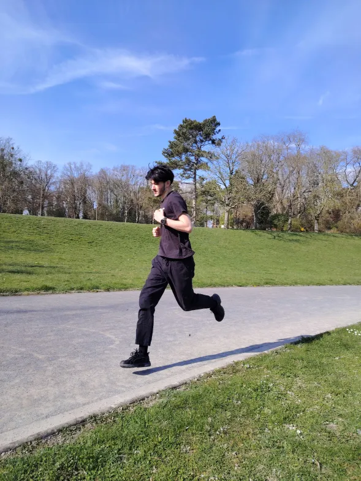
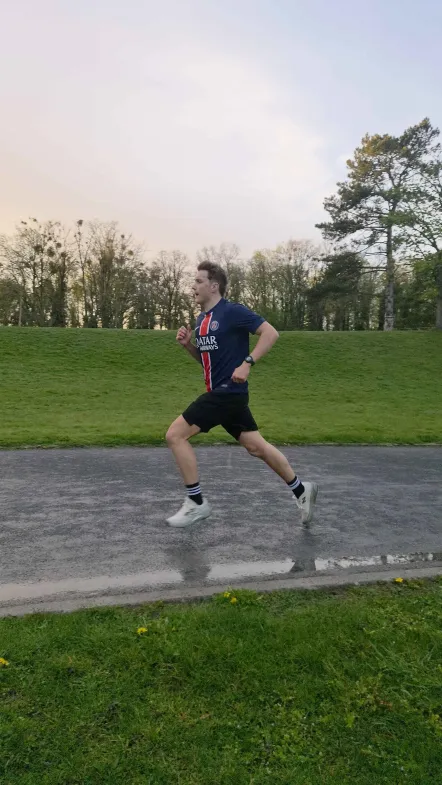
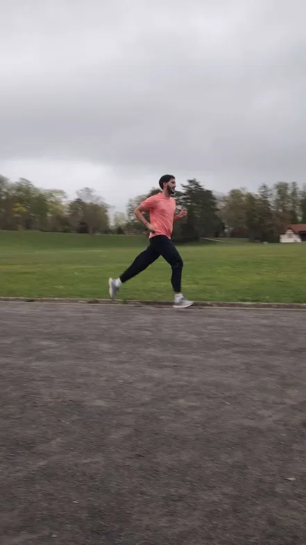
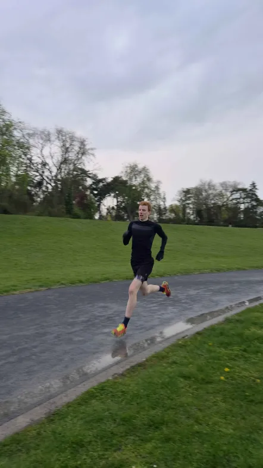
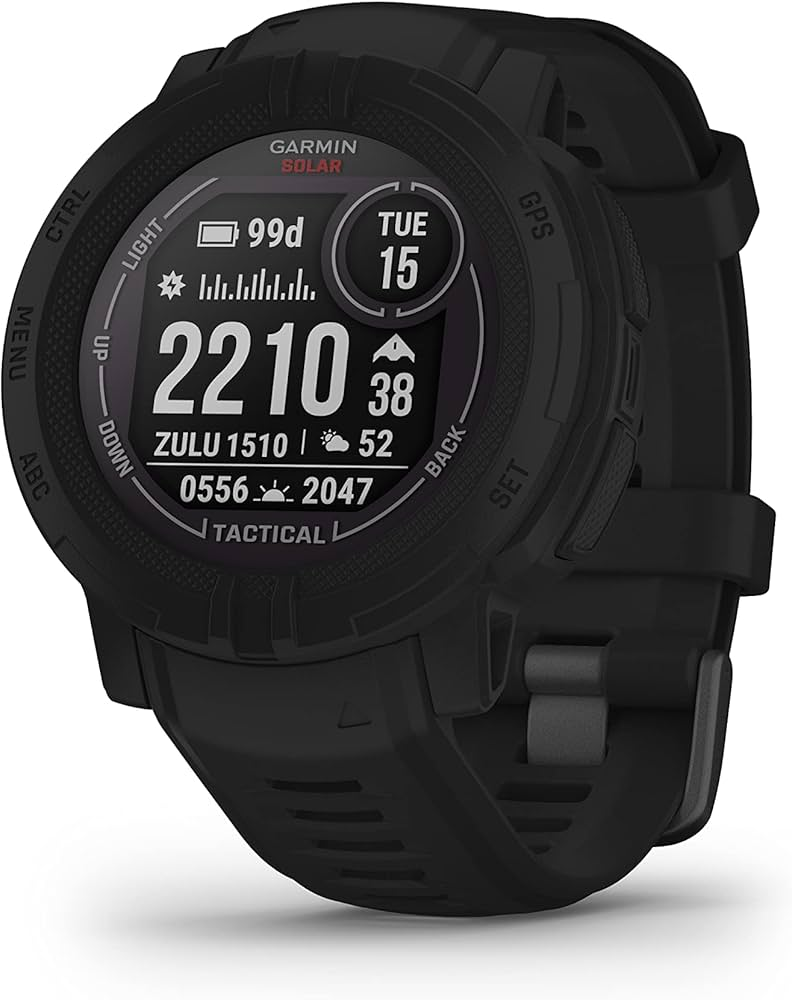
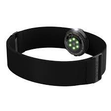
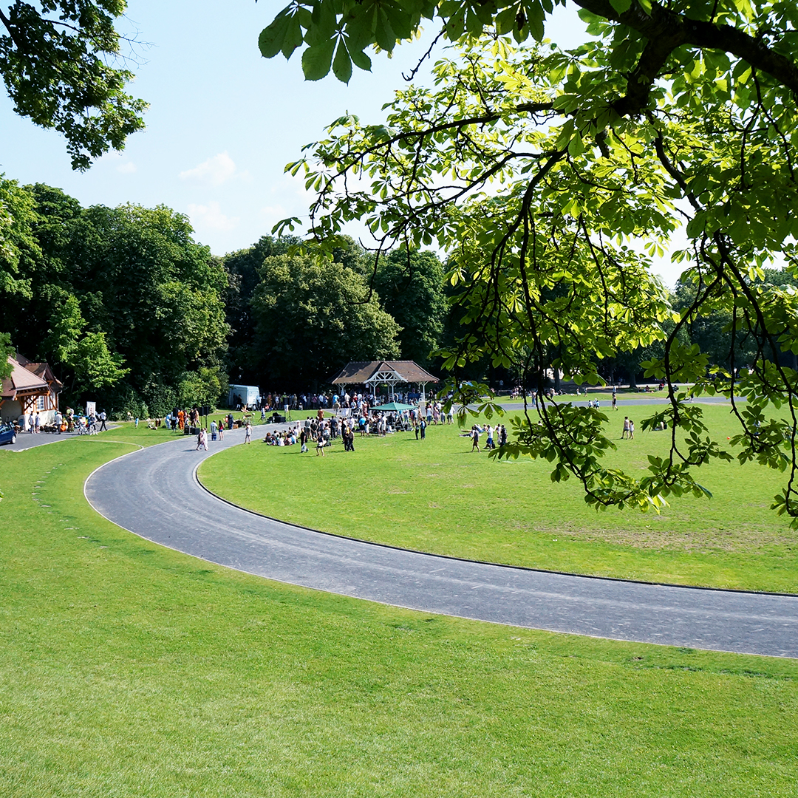

De l'extraction automatique des données Garmin à la visualisation interactive de la performance.




Nos montres Garmin enregistrent
chaque seconde d'effort.
Qu'en fait-on ?
Les fichiers FIT contiennent une densité de données impressionnante : GPS, fréquence cardiaque, cadence, puissance… Mais ils restent illisibles sans traitement.
Ce projet construit un pipeline complet : de l'extraction brute à une visualisation sportive interactive, avec croisement météo.
Comment les temps et métriques physiologiques évoluent-ils entre S1, S2, S3 et S4 pour chaque coureur ?
Quelles différences de profil physiologique entre Adrien, Nathan, Khalil et Arthur ?
Les conditions climatiques (température, vent, humidité) ont-elles un impact mesurable sur les performances ?
Comment se décompose le profil vitesse/puissance sur les 50 premières secondes du Tour 2 ?
Focus principal : le Tour 2 — l'effort maximal d'environ 400m au sein de chaque séance. Détecté automatiquement par algorithme, c'est lui qui concentre la donnée la plus riche en performance.

⌚
❤️Piste asphalte · Conditions variables hiver/printemps 2026.

Algorithme basé sur la vitesse instantanée : seuil = 75% du pic. Filtre durée (45–200s) et distance (~400m) pour isoler l'effort maximal.
Récupération via Open-Meteo des conditions au moment exact de chaque séance (timestamp + coordonnées GPS du Parc de Champagne).
Scripts planifiés sur VM Linux. Nouveau fichier FIT déposé → extraction → mise à jour BDD → dashboard actualisé automatiquement.
| Coureur | Séance | Durée (s) | Distance (m) | Allure | Meill. allure | FC moy | FC max | Cadence | Puissance |
|---|---|---|---|---|---|---|---|---|---|
| Adrien | 1 | 92 | 398.9 | 3:43/km | 3:27/km | 167 | 170 | 175 | 454 |
| Adrien | 2 | 96 | 393.4 | 3:58/km | 3:42/km | 179 | 182 | 170 | 445 |
| Adrien | 3 | 91 | 397.4 | 3:51/km | 3:35/km | 169 | 172 | 179 | 419 |
| Adrien | 4 | 79 | 333.1 | 3:53/km | 3:38/km | 145 | 158 | 166 | 446 |
| Arthur | 1 | 58 | 410.5 | 2:14/km | 2:04/km | 178 | 188 | 196 | 686 |
| Arthur | 2 | 52 | 362.1 | 2:18/km | 1:59/km | 177 | 181 | 206 | 647 |
| Arthur | 3 | 57 | 394.9 | 2:25/km | 2:11/km | 150 | 157 | 208 | 619 |
| Arthur | 4 | 60 | 394.6 | 2:22/km | 2:15/km | 176 | 183 | 198 | 624 |
| Khalil | 1 | 76 | 402.7 | 3:02/km | 2:47/km | 190 | 196 | 178 | 493 |
| Khalil | 2 | 86 | 397.8 | 3:32/km | 3:23/km | 163 | 169 | 172 | 462 |
| Khalil | 4 | 81 | 423.2 | 3:16/km | 2:58/km | 186 | 193 | 178 | 474 |
| Nathan | 1 | 89 | 408.9 | 3:38/km | 3:24/km | 192 | 196 | 161 | 479 |
| Nathan | 2 | 71 | 386.4 | 3:00/km | 2:53/km | 115* | 165 | 176 | 537 |
| Nathan | 3 | 78 | 399.7 | 3:13/km | 3:04/km | 158 | 161 | 174 | 493 |
| Nathan | 4 | 89 | 393.4 | 3:49/km | 3:07/km | 160 | 165 | 163 | 452 |
Plus la valeur est basse, plus le coureur est rapide.
Valeurs normalisées (0–100) sur les 4 dimensions clés.
| Métrique | Adrien | Nathan | Khalil | Arthur |
|---|---|---|---|---|
| Vitesse | 57 | 60 | 71 | 100 |
| FC max | 82 | 85 | 100 | 95 |
| Puissance | 72 | 72 | 76 | 100 |
| Cadence | 80 | 78 | 85 | 100 |
Lecture : Arthur domine toutes les métriques. Khalil présente la FC max la plus élevée (193 bpm) pour une vitesse moindre — coût cardiaque plus important.
Source : Open-Meteo · Parc de Champagne · Données horaires
| Séance | Date | Temp | Vent | Cond. |
|---|---|---|---|---|
| S1 | 12/03 | 12.5°C | 23.6 | 🌬️ Venteux |
| S2 | 19/03 | 15.4°C | 15.1 | 🌤 Doux |
| S3 | 25/03 | 5.3°C | 23.6 | 🌧 Pluie |
| S4 | 30/03 | 7.8°C | 16.7 | 🌫 Humide |
Observation : Les meilleures performances d'Arthur sont en S1 et S2 (plus froid). La météo clémente en S3–S4 ne se traduit pas en meilleures performances — d'autres facteurs entrent en jeu.
FIT → Python → BDD → Streamlit. Automatisation complète sur VM. 15 runs analysés. Extensible sans intervention manuelle.
Chaque graphique répond à une question précise. Radar pour le profil, ligne pour la progression, barres pour la comparaison directe.
Biais GPS, délai FC, puissance estimée, météo interpolée, n=4 — toutes les limites sont identifiées et documentées.